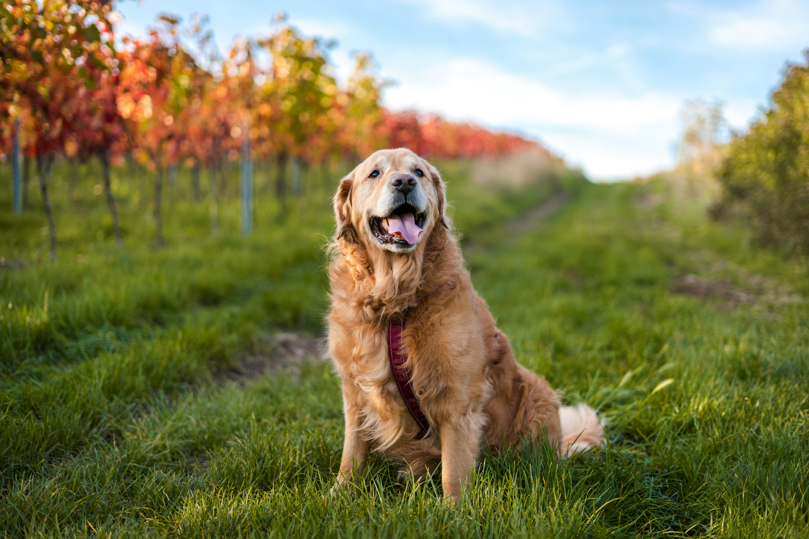

正解

ゴールデン・レトリーバーは、黄金色やクリーム色の被毛を持ち、 ラブラドール・レトリーバーは、さまざまな色の被毛を持ってる。 また、ゴールデン・レトリーバーの顔はやや細長く、目が大きく、柔らかな表情をしているのに対し、 ラブラドール・レトリーバーの顔はより四角い形をしており、口から鼻の部分が幅広く、より力強い印象を与える。
ゴールデン・レトリーバーは、黄金色やクリーム色の被毛を持ち、 ラブラドール・レトリーバーは、さまざまな色の被毛を持ってる。 また、ゴールデン・レトリーバーの顔はやや細長く、目が大きく、柔らかな表情をしているのに対し、 ラブラドール・レトリーバーの顔はより四角い形をしており、口から鼻の部分が幅広く、より力強い印象を与える。